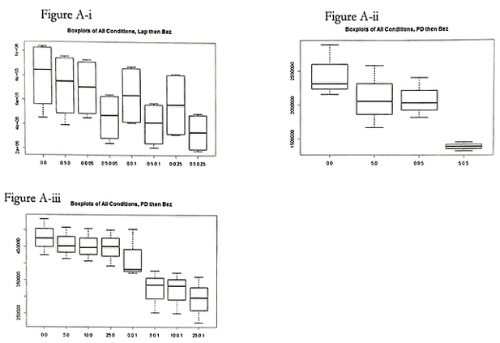
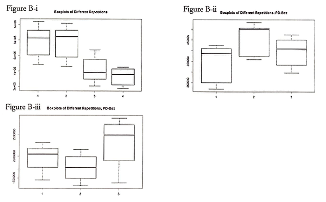
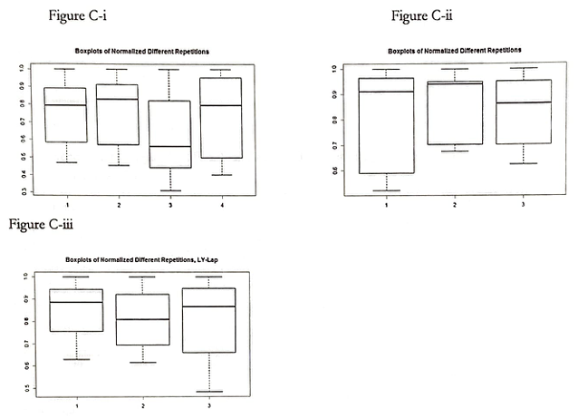
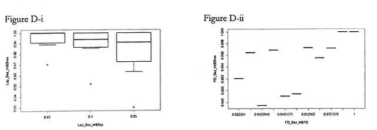
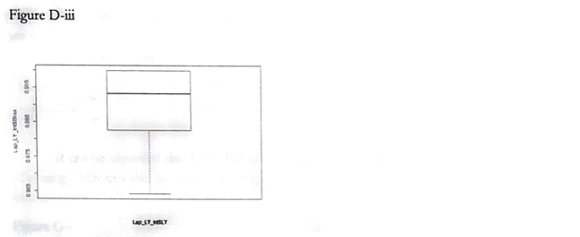
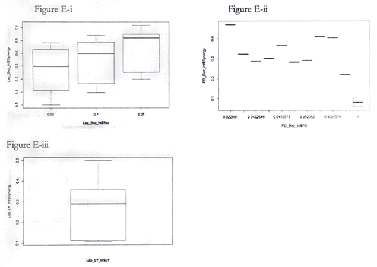
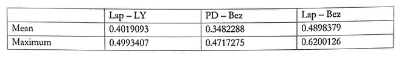
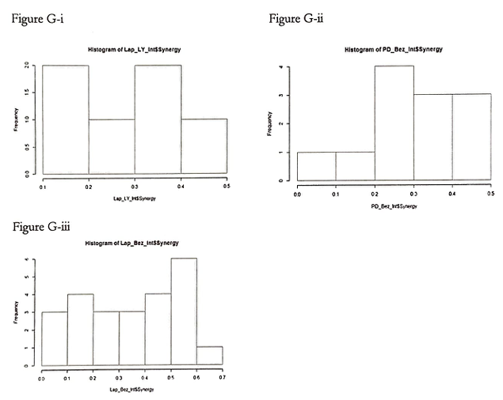

Cancer Treatments: Bevacizumab and PD901
The effect of combining bevacizumab with PD901 in limiting cell growth in vitro.
Summary
Bevacizumab, otherwise known as Avastin, is a medication used to treat a variety of types of cancers. In the study conducted by the client (Prof. Mark Conaway), an experiment using 4 doses of bevacizumab {0, 0.05, 0.10, and 0.25 mm} and 4 doses of PD901 {0, 0.005, 0.01, and 0.025 mm} were run with 3 biological replicates. The main objective of this statistical study is to determine whether bevacizumab and PD901 act additively in inhibiting cell growth.
Analysis of the client's dataset uncovered noteworthy results. Statistical modeling supports that bevacizumab and PD901 do act additively in inhibiting cell growth. However, the additive effects are not constant. The synergy of the two drugs grows strong or weaker based on the different combinations of dosage.
Introduction
Bevacizumab is widely used to treat a number of types of cancers such as colon cancer, lung cancer, ovarian cancer, and glioblastoma. Bevacizumab, by inhibiting the development of new blood vessels, effectively inhibits cell growth.
The experiment was conducted as separate experiments on each of the 3 days. Varying dosage for both bevacizumab {0, 0.05, 0.10, and 0.25 um} and PD901 {0, 0.005, 0.01, and 0.025 um} were used. For each combination, three biological replicates were run. The data consists of 144 measurements of cell counts.
The primary objective of this study is to determine whether bevacizumab and PD901 act additively in inhibiting cell growth. The secondary objective is to discover points of maximum and minimum synergy and to create an effective model for communicating the varying degrees of synergy.
Prior to Analysis
The data provided by the client consisted of three sections that are titled "Lap Bez", "PD Bez", and "Lap LY". When multiple models are displayed, the graphs will always follow that respective order. Note that the size of the data is far too small to create a pertinent confidence interval fit for a notched box plot. If notched box plots were to be used, all or most notches (i.e. the confidence intervals for the median) will overlap. Thus, this study will utilize a regular box plot and rely on the precision of the experiment in reaching the conclusion. All the cell counts for technical triplicates are averaged to a single value.
Approaches and Results
Figure A-i, A-ii, and A-iii displays the respective Boxplots of All Conditions. Along with Figure B-i, B-ii. and B-iii (Boxplots of Different Repetitions), Figure A serves to describe the state of the data before normalization. Prior to normalization, there appear to be significant differences along with the replications.
 However, as can be seen with Figure C-i, C-ii, and C-iii (Boxplots of Normalized Different Repetitions), the replications within the sections are not significantly different from one another.
Note that normalizing in this study indicates the division of all values by the mean of the initial cell count when neither of the drugs was applied.
Following the normalization of the data, the predicted cell decrease rate based on the drugs alone was calculated. This study defines the synergy of the two drugs to be this predicted value, Bliss, minus the actually observed decrease in the cell count.
Figures D-i, D-ii, and D-iii displays the boxplot of the bliss of each respective combination of the drugs.
 Accordingly, Figure E-i, E-ii, and E-iii display a boxplot of the synergy for Lap-Bez, PD-Bez, and LY-Lap, respectively.
The respective mean and maximum values of the synergies according to drug combinations are as follows.
It can be observed that Lap-Bez has both the highest mean of the highest maximum value of synergy. This can also be observed in Figure G-i, G-ii, and G-iii, histograms of respective synergy values.
Conclusion
The observations made in this study strongly suggest that bevacizumab and PD901 do act additively in inhibiting cell growth. While synergy may fluctuate depending on the dosage and combination of drugs, the cell reduction rate for any observation was higher than would have occurred independently.
We recommend that further research focusing specifically on bevacizumab and PD901 with more samples be conducted to further establish the finding.